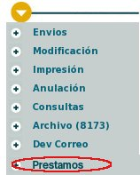
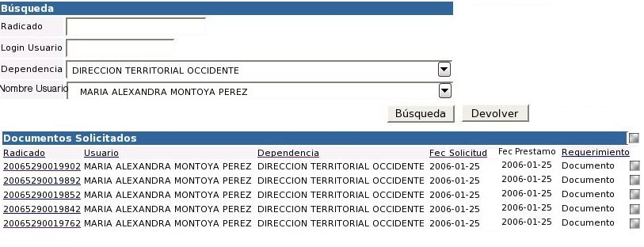
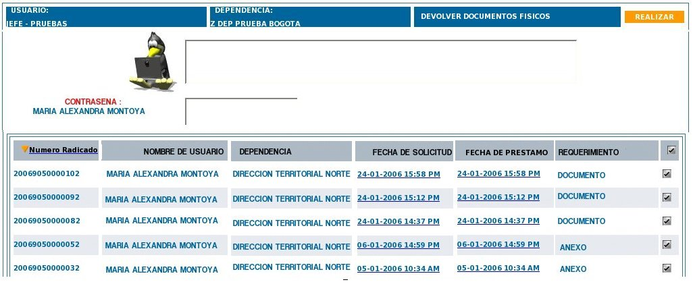
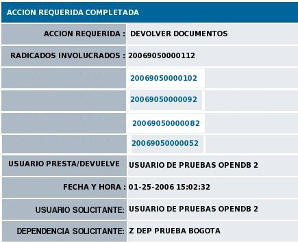

3.1.1.2. El actor debe haber ingresado al sistema
3.1.1.3. Deben existir documentos prestados en el sistema
3.1.1.4. Se debe realizar una configuración especial en el archivo config.php donde se determine si el campo de contraseña para los préstamos y devoluciones debe ser obligatorio o no. La entidad que lo requiera lo habilita.
1. A: INICIO - ingresa al módulo de préstamo de documentos en la lista de permisos especiales del sistema

2. S: Despliega el menú principal del módulo de préstamos:

4. S: Despliega una vista para realizar la búsqueda de los radicados que han sido prestados.
5. A: Selecciona uno o varios criterios que permitan buscar los documentos prestados a los usuarios y presiona el botón "Búsqueda".
6. S: Se podrá hacer búsqueda de documentos que por el Número de Radicado, Login, Dependencia, Nombre de usuario solicitante.

7. S: En la lista de resultados aparece el número de radicado (link), usuario al que se prestó, dependencia, fecha de solicitud, Requerimiento (Anexo, Documento), fecha de préstamo.
8. A: Selecciona el radicado o radicados que serán devueltos, marcando el check box al final de cada registro. Se podrá seleccionar uno o varios radicados a la vez. Da click en el botón "Devolver"
9. S: Ingresa a una ventana con la siguiente información:

Lista de los radicados que serán devueltos con:
Número de expediente: Si se encuentra incluido en algún expediente
Nombre de usuario: Del usuario que
solicita el préstamo
Dependencia Usuario: A la cual pertenece el usuario que solicita
Fecha de pedido: Fecha en que se solicitó el documento
Fecha de préstamo: Fecha en que fue prestado el documento
Requerimiento: si se prestó el documento o el anexo.
Cuadro de selección de radicado
Dependencia Usuario: A la cual pertenece el usuario que solicita
Fecha de pedido: Fecha en que se solicitó el documento
Fecha de préstamo: Fecha en que fue prestado el documento
Requerimiento: si se prestó el documento o el anexo.
Cuadro de selección de radicado
Comentarios o Descripción: que serán registrados en la transacción
Contraseña Usuario: (En caso de haberse configurado para pedirla) Para que el usuario que solicitó el préstamo digite su contraseña y pueda ser validada por el sistema, dando la garantia que se devuelve el documento físico.
Un botón: "Realizar"
10. A: El usuario a quien se prestó el documento digita su contraseña, el usuario que devuelve diligencia el campo de comentario y selecciona el botón "Realizar"
10.1. S: Valida que la contraseña digitada sea válida y realiza la devolución del documento o documentos.
10.2. S: Realiza la siguiente confirmación:
